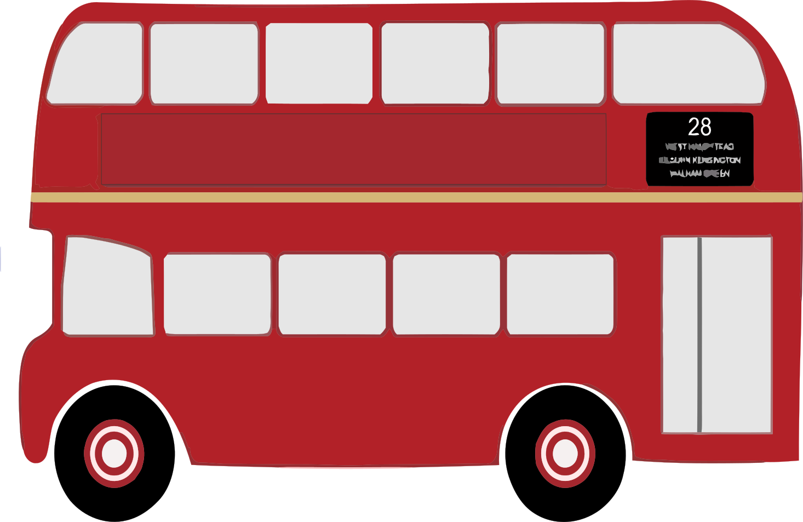
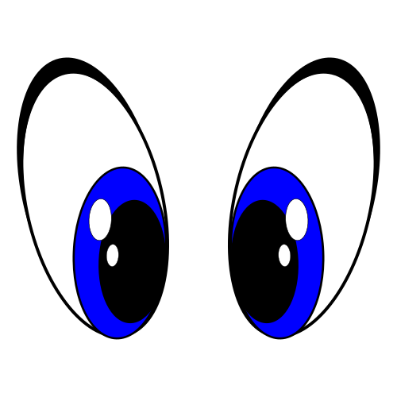

Pacmen factory
This the earliest project of the three. It's a little game where you can create as many pacmen as you want and make them move randomly across the screen.
Github repo
Bus real time tracking
This is the last project in term of time. Using Boston's public transport APIs and MapBox library i represented a map where the position of a college i stayed at and the real time location of a bus i used are highlighted by markers.
Github repo Eye tracker
This project represents a pair of eyes in the middle of the screen that follow the mouse movement the eyes are made with css, and it is in fact a pretty fun addition to a website.
Github repo 